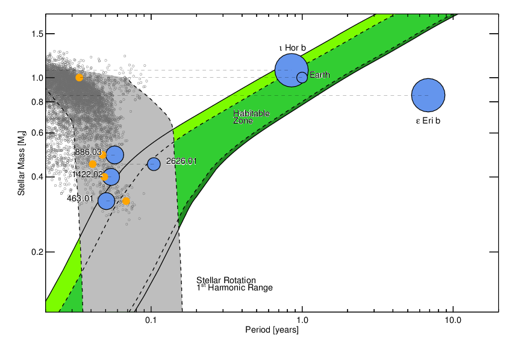

Until the end of 2017, I often wrote up short summaries of projects where I either led or significantly contributed to the effort. Although I no longer do this regularly, the older summaries of my projects are available below.
The First Eight-Planet System Outside the Solar System
Using data from NASA’s Kepler mission and state-of-the art artificial intelligence methods, my collaborator, Chris Shallue, and I have discovered the first system to host eight confirmed exoplanets around the star Kepler-90. Kepler-90 was previously known to host seven exoplanets, so our discovery of an eighth planet in the system, called Kepler-90 i, brings Kepler-90 into a tie with our own solar system as the planetary system known to host the most exoplanets.
{kind=link}
Our work began in late 2016, when Chris, a machine learning researcher at Google Brain, contacted me and asked about the potential for applying modern machine learning techniques, in particular deep learning, to searching for exoplanets in Kepler data. After discussing the possibilities, we decided to attempt to build a neural network capable of classifying possible planet signals as either planets or false positives. Traditionally, this work has been done by humans, and more recently, by automated methods like the Kepler team’s Robovetter and Autovetter, but Chris and I wondered if we could do the same (or better) using deep learning.
We built systems to extract Kepler data, put it into formats suitable for neural networks to analyze it, built a neural network, and trained it to recognize planets and false positives using the Kepler planet candidate catalog. After months of testing and tinkering, our neural network was eventually able to correctly classify planet candidates and false positives 96% of the time, close to industry standards like the Robovetter and Autovetter in performance.
Once we had built a neural network, we decided to test it out on some new signals. Using traditional transit-search methods (in particular, the same methods I use to search K2 data), we performed a new search of a handful of systems observed by Kepler (in particular, about 670 systems known already to host multiple planets). Importantly, we allowed this search to very sensitively explore weak signals. Usually, when searching Kepler data, a threshold in signal strength is set, below which weak signals are discarded, so as not to overwhelm the searcher with false positive signals. By lowering this threshold in our new search, we suspected that we might find some new planets, at the expense of a large increase in the number of false positives. But because we have a neural network that can efficiently identify real planets and screen out false positives, we could still efficiently identify new planets.
{kind=link}
As we expected, our search identified a large number of signals, the vast majority of which were false positives. But when we sent the new signals through our neural network, a handful of promising candidates rose to the top. The most highly ranked signal by our neural network turned out to be a new transit candidate around the star Kepler-90, which was previously known to host seven transiting planets.
We carefully checked the validity of this transit signal, and calculated the false positive probability of the new candidate around Kepler 90. We were able to statistically validate the signal — the likelihood that this signal is a false positive is smaller than 1 in 10,000. We therefore were able to confirm the first 8 planet system discovered outside of our own solar system. We also validated a new signal around a star called Kepler 80, which was previously known to host five planets. The new planet, Kepler-80 g, appears to be part of a rare dynamical configuration called a “resonant chain”, where gravitational interactions between adjacent trios of planets cause them to orbit in lock-step with one another.
{kind=link}
We consider this result to be a proof of concept, showing that we can indeed use neural networks to accurately identify exoplanets, and that our strategy of lowering search thresholds and using a neural network to identify the most promising candidates can lead to new discoveries which were missed by previous techniques. Next, we plan to improve our neural network and perform a search of the entire Kepler dataset. We hope that doing this will improve Kepler’s sensitivity to weak planet signals, including transits of Earth-sized planets in Earth-like orbits around Sun-like stars.
See this discovery featured in the Astronomy Picture of the Day and press coverage by the New York Times, the Washington Post, CNN, the USA Today, Astronomy Magazine, Space.com, the Los Angeles Times, the Miles O'Brien blog, National Geographic, Smithsonian Magazine, the BBC, Wired, the Google Blog, NASA, and the University of Texas at Austin. This work was featured by the University of Texas as part of its Research that Changed the World in 2017.WASP-47 and the Origins of Hot Jupiters
Hot Jupiters are planets about the size and mass of Jupiter orbiting very close to their host stars, with typical orbital periods of about three days. There are no planets like these in our own solar system, and how these planets form and come to be where we observe them today is a mystery. Traditional planet formation theories suggest that Jupiter-mass planets form most easily far away from their host stars, beyond what is called the “snow line”, where water ice exists in solid form and material can more effectively clump together and form the cores of these giant planets. Explaining how hot Jupiter exoplanets can come to be so close to their host stars is challenging, and there are several competing explanations. One general category of explanation suggests that the planets formed far from their host stars, beyond the snow-line, and then somehow “migrated” and ended up very close to their host stars. There are two main ways the migration is believed to happen: the planets smoothly migrate through the protoplanetary disk from which they formed, or multiple giant planets might have formed, and strong gravitational interactions between the two planets may have caused one of the planets to be thrown close to its star. In the first pathway, called “disk migration,” the planets in the system should remain well aligned with one another, while for the second pathway, called “planet/planet scattering”, the planets in the system should not be well aligned with one another. The other general category of how hot Jupiters might form is called “in-situ formation”, which suggests that it may actually be possible for giant planets to form as close to their host stars as we see them. It is tricky to do this theoretically, but some work has shown it may be plausible. In general, in-situ formation predicts that hot Jupiters could be well aligned with other planets in the system, although gravitational interactions with nearby planets could scatter them to be misaligned. With so many different theories for how these mysterious planets might have formed, any constraints placed on the origins of hot Jupiters are interesting and important.
Recently, along with my collaborator Juliette Becker at the University of Michigan, I have been studying an interesting planetary system around a star called WASP-47. WASP-47 was first identified by the ground-based Wide Angle Search for Planets (WASP) survey as a host of a transiting hot Jupiter exoplanet, called WASP-47 b, orbiting its star every 4 days. A few years later, WASP-47 happened to fall in the field of view of the K2 mission, which observed it continuously and with high precision for about 80 days. Amazingly, when we looked at the K2 observations, we found two additional transiting planets around WASP-47 orbiting close to the hot Jupiter. One planet, WASP-47 e, is a super-Earth orbiting every 19 hours, and the other, WASP-47 d, is a Neptune-sized planet orbiting every 9 days. The presence of these two additional planets near the hot Jupiter make the WASP-47 system unique - no other hot Jupiter is known to have additional nearby planets.{kind=link}
After discovering the two additional planets around WASP-47, we began observing the star with the HARPS-N spectrograph to detect the “wobble” of the star as its planets orbit. We combined about 80 observations from HARPS-N with data taken by other teams using the CORALIE spectrograph and Planet Finder Spectrograph in Chile, and the HIRES spectrograph in Hawaii. We strongly detected the signals of the three transiting planets, along with a fourth, long-period gas giant planet, WASP-47 c, first detected by a team led by Marion Neveu-VanMalle using the CORALIE spectrograph. We combined the planetary mass measurements from the spectrographs and the radius measurements from K2 to learn about the compositions of the two smaller transiting planets. The Neptune-sized WASP-47 d has a mass that is also similar to Neptune, and therefore probably has a similar interior structure, likely consisting of a rocky core, a thick water/methane rich envelope, and an outer hydrogen/helium layer. The structure of the short-period super-Earth, WASP-47 e, is a bit surprising. Unlike most other ultra-short-period planets, WASP-47 e has a mass that is inconsistent with an Earth-like core/mantle ratio. Instead, we think WASP-47 e likely has a thin layer of heavy volatile elements like water or methane above an Earth-like core and mantle.
{kind=link}
Perhaps the most interesting thing about WASP-47 is trying to understand how it may have formed. The fact that WASP-47 hosts additional transiting planets by itself is constraining. We performed dynamical simulations to study how stable the inner transiting system is, and we found that most likely, the two nearby transiting planets to the hot Jupiter could not exist if the hot Jupiter migrated to where it is now via planet planet scattering. The inner system is highly dynamically unstable if the planets have even small eccentricities, let alone the large ones likely to result from planet/planet scattering. We also simulated what happens to the inner system in the presence of the outer planet, WASP-47 c. We don’t know the orbital inclination of the outer planet (since we don’t know if it transits), so we studied how the outer planet’s impact varied at different orbital inclinations. Strikingly, we found that it was very hard to reproduce the characteristics of the inner planetary system if WASP-47 c is inclined by more than a few degrees from the plane of the inner system. Again, this suggests that the WASP-47 system likely did not form via planet/planet scattering, because if that was the case we would expect the planets to be inclined with respect to one another.
 While our observations and theoretical study of the WASP-47 system suggests that it did not form via planet/planet scattering, WASP-47 is unusual, so we wanted to know if these conclusions were general. To do this, we looked at other, more typical hot Jupiters with detected long-period gas giant companions (like WASP-47 c), and asked “Statistically, what are the inclinations of these outer planets compared to the hot Jupiters?”. We took advantage of the fact that hot Jupiters around cool stars have orbits which as a rule are well aligned with with the spins of their host stars and assessed how inclined planetary companions can disturb that alignment. We found using a sample of six hot Jupiters that the distant outer planets must be well aligned with the hot Jupiters themselves. If the typical scatter in inclination is greater than about 20 degrees, it is extremely difficult to reproduce the well aligned hot Jupiter orbits and spins. In general, if hot Jupiters formed by planet/planet scattering, they should more misaligned than this, so this result suggests that most hot Jupiters around cool stars do not form via planet/planet scattering, and instead likely form via either disk migration or in-situ formation.
While our observations and theoretical study of the WASP-47 system suggests that it did not form via planet/planet scattering, WASP-47 is unusual, so we wanted to know if these conclusions were general. To do this, we looked at other, more typical hot Jupiters with detected long-period gas giant companions (like WASP-47 c), and asked “Statistically, what are the inclinations of these outer planets compared to the hot Jupiters?”. We took advantage of the fact that hot Jupiters around cool stars have orbits which as a rule are well aligned with with the spins of their host stars and assessed how inclined planetary companions can disturb that alignment. We found using a sample of six hot Jupiters that the distant outer planets must be well aligned with the hot Jupiters themselves. If the typical scatter in inclination is greater than about 20 degrees, it is extremely difficult to reproduce the well aligned hot Jupiter orbits and spins. In general, if hot Jupiters formed by planet/planet scattering, they should more misaligned than this, so this result suggests that most hot Jupiters around cool stars do not form via planet/planet scattering, and instead likely form via either disk migration or in-situ formation.
See also a summary of this work by Astrobites, a press release from the University of Michigan, and coverage from Science Daily, Futurity, Astronomy Now, and Sci-News. WASP-47 was also featured as one of the 20 most intriguing exoplanet systems by NASA JPL.
Two Small Planets Transiting HD 3167
Small planets transiting nearby bright stars are valuable objects because it is possible to study these planets in depth. We can measure the masses of these planets to learn about their density and bulk composition, and for a few particularly well suited planets, we can study their atmospheres using a technique called "transit transmission spectroscopy."
{kind=link}
We know of only a few small planets that transit their host stars that are near and bright enough for atmospheric studies. Most of the planets discovered by NASA's Kepler space telescope orbit stars too faint for these detailed follow-up observations. However, now that Kepler is now undertaking the K2 mission it looks at different parts of the sky for about 80 days at a time, and can search more bright stars for planets. This means that K2 can find planets around stars bright enough to study in detail with transit transmission spectroscopy and learn about their atmospheres.
We recently found two such planets orbiting a nearby, bright star called HD 3167 using K2 data. The star is a bit smaller than our own sun, and hosts two transiting planets: one orbiting in a scorching 23 hour orbit, and another orbiting in a comparatively balmy, but still quite hot 29 day orbit. The inner planet, called HD 3167 b, is about 55% larger than the Earth, and is likely rocky (because if it had any thick atmosphere, it almost certainly will have been blasted off by the star's intense heat). The outer planet is about three times larger than the Earth, and we suspect that it likely has a thick atmosphere which we could study in depth using transit transmission spectroscopy.
The planets transiting HD 3167 are very similar to many other planets previously discovered by Kepler — what makes them special is the proximity of their host star. HD 3167 is only about 150 light years away and is bright enough that we should be able to measure both planets' masses and study HD 3167 c's atmosphere with the Hubble Space Telescope. Learning about the detailed characteristics of planets like those HD 3167 will help guide us towards an understanding of the composition and atmospheres of exoplanets.
See also coverage by phys.org.
Five Planets Transiting a Ninth Magnitude Star
NASA's Kepler mission was extraordinarily successful at finding planets, but most of those planets were found orbiting relatively faint stars. Kepler's discoveries taught us most of what we know about the inner parts of planetary systems, but many unanswered questions remain because the planet’s host stars were just too faint for detailed follow-up studies. The K2 mission has increased the number of small planets transiting bright stars, but the planets discovered by K2 tend to have shorter period orbits than planets discovered by Kepler because K2 only observes stars for about 80 days, compared to 4 years for the original Kepler mission. K2 has also not yet discovered many planetary systems with architectures as rich as the systems discovered by Kepler, which included systems of up to seven planets, strong dynamical interactions, and systems planets ranging in size from terrestrial to Jovian.
{kind=link}
Using data from K2, we have found a system with rich architecture transiting a bright star called HIP 41378. The star is only about 116 parsecs away from Earth and hosts at least five transiting planets. Two of these planets are small and orbit close to their star, in 15.6 and 31.7 day orbits, just outside of (but not in) a 2:1 mean motion resonance. We call these planets HIP 41378 b and HIP 41378 c, respectively. These planets transited more than once during the 80 days of K2 observations, so we are able to measure precisely their orbital periods. Three other planets are visible in the K2 light curve, which transit only once during K2 observations, which means they have longer orbital periods than the two inner planets. One of the outer planets, HIP 41378 d is Neptune sized, one (HIP 41378 e) is slightly smaller than Saturn, and one (HIP 41378 f) is about the size of Jupiter. Because we don’t see multiple transits of the three outer planets during the 80 days of K2 data, we can only estimate the orbital periods. Using constraints from the known population of exoplanets, the orbital dynamics of the HIP 41378 system, and the knowledge that the planets transited exactly once during the K2 observations, we are able to make somewhat sharp estimates of the orbital periods. We inferred that HIP 41378 d and e have orbital periods around 160 and 130 days, respectively, and HIP 41378 f likely orbits every 325 days (all with uncertainties of about a factor of two).
{kind=link}
Planets transiting bright, nearby stars like HIP 41378 are valuable because it is feasible to (for example) measure the planets’ masses or learn about their atmospheres. The challenge will be measuring a precise orbital period for the outer three planets, which only transited once during the 80 days of K2 observations. If we can do it, the rewards will be great. HIP 41478 f, in particular, is an excellent candidate for atmospheric characterization with observatories like the Hubble Space Telescope or the James Webb Space Telescope. We could also measure HIP 41378 f’s oblateness - that is, how squished the planet is due to its rotation. Hopefully what we know so far is only the beginning of what we will learn about the HIP 41378 system.
See also a summary of this work by AAS Nova, coverage from Mic, Universe Today and Space Flight Insider, and a visualization of the system from NASA.
Planetary Candidates from the First Year of the K2 Mission
Ever since a mechanical failure forced the Kepler space telescope to began searching for planets in new parts of the sky in its K2 mission, we have been conducting a search for transiting planets in K2 data. We have published a paper with the results of this survey: a list of over two hundred planet candidates from the first year of K2 data.
{kind=link}
We searched for these planetary candidates using similar techniques to what has been done to search for planets in Kepler data, with one important change — first we had to perform a correction for systematic effects introduced into the data by the unstable pointing of the spacecraft (see below and a description of the technique in Vanderburg & Johnson 2014). After carefully vetting and testing the results of the planet search to reject false positives, we found that the planet candidates from K2 are quite similar to the planet candidates found by Kepler in its original mission (see image at right).
The biggest difference between the planet candidates found by Kepler and those found by K2 is that K2 candidates tend to be found around brighter stars. This is because K2 searches many different target fields for planets, and can observe more bright stars than Kepler was able to observe. Therefore, the planets found by K2 tend to be easier to follow-up and study in detail. We have already performed follow-up studies of the disintegrating minor planet transiting WD 1145+017 (see below) and two additional planets in the WASP-47 hot Jupiter system (see Becker et al. 2015).
See also a summary of this work by AAS Nova, and press coverage from the Washington Post, Gizmodo, Discovery News, Nature News, and Popular Mechanics.
A Disintegrating Minor Planet Transiting a White Dwarf
{kind=link}
We have recently found using data from the K2 mission that a white dwarf (named WD 1145+017) is being transited by disintegrating rocky bodies. This discovery is the first planetary material transiting a white dwarf, and is confirmation of a long-held theory about the origin of mysterious heavy elements on the surfaces of white dwarfs.
Astronomers noticed decades ago that lots of white dwarf stars (the dead remnants of stars like the sun) tend to show signs of heavy elements on their surfaces. They soon realized that because white dwarfs are so small and massive (and therefore have extremely strong gravity at their surfaces), that these heavy elements shouldn't be there — if you drop a heavy element like iron onto a white dwarf, it will quickly settle into the interior of the star, where we can't see it. This a lot like panning for gold: when you slosh the sediments and gold dust around, the gold settles to the bottom because it's denser than the rocks and gravel. So it was a mystery why these white dwarfs should have heavy elements at their surfaces. They must have been actively accreting them, but from where? For a long time, the hypothesis was that they had been accreting the heavy elements from the interstellar medium (gas in otherwise empty space), but the amounts of metals on the white dwarfs didn't seem to to make sense.About a decade ago, scientists started to realize that the heavy element pollution could be explained by debris from the white dwarfs' planetary systems. The theory was that before the white dwarf progenitor stars (which were normal, low mass stars like the Sun) evolved to become white dwarfs, they had planetary systems like the Solar system. After the star evolved into a white dwarf, the outer parts of the planetary systems should have survived, so what if the heavy elements came from rocky bodies in the planetary system? These planets could have been kicked inwards toward the star (kind of like how comets and asteroids in our own solar system can get kicked inwards on close orbits to the sun), broken apart by the intense gravity of the star, and eventually accreted onto the star, causing the heavy element pollution we see.
We weren't thinking about this when we first started looking at K2 data taken of WD 1145+017. This star originally came to our attention because it seemed to show the telltale signature of a transiting exoplanet. We saw periodic dips every 4.5 hours and no evidence for relativistic beaming, which would have given away the presence of a star. Finding a transiting planet around a white dwarf would be very exciting, because we have no examples of such systems, and because such a transiting planet would be a great target for studies of its atmosphere. So we started following up the K2 observations with data from the ground.
The ground based observations didn't show what we were expecting. We kept seeing tantalizing clues, but were unable to see a consistent picture emerging of the system. We were able to rule out a small transiting planet, but we couldn't figure out what was causing the transit signals we saw in K2. We were almost ready to give up when we saw two beautiful, 40% deep, asymmetric transits separated by the 4.5 hour period we saw in K2. At this point, we knew that what we had been seeing was real, and we realized that the asymmetric shape of the transits indicated strongly that we weren't watching the transits of a normal planet - we were in fact witnessing a small rocky object disintegrating.
Disintegrating planets have been detected before in Kepler data transiting main sequence stars. In these cases, the disintegrating planet transits had two main characteristics that distinguished them from normal transits: asymmetric profiles indicative of a comet-like tail trailing the planets, and variable transit depth. The transits of WD 1145+017 showed the asymmetric transit profiles, so on a hunch we went back and looked for transit depth variations, and indeed, we found that the K2 light curve showed the variable transit depths we expected. At this point, we were pretty convinced of what we were seeing.
The discovery of rocky bodies disintegrating near a white dwarf is perhaps the best evidence yet that the pollution of white dwarfs comes from the remnants of the white dwarf progenitors' planetary systems. Until now, the evidence for this scenario had been circumstantial. Many white dwarfs had evidence for heavy elements, and many of these showed evidence for a dusty debris disk near the white dwarf (thought to be made from the pulverized remains of a rocky object). But now, we have caught the white dwarf in the act of destroying a minor planet, vaporizing the rock by its extreme heat, and accreting it onto the star. WD 1145+017 shows evidence for all three pieces of evidence: heavy element pollution in the atmosphere, a dusty debris disk, and fragments of a rocky minor planet transiting as it disintegrates.
The story of WD 1145+017 is far from finished. We still don't understand a lot about the system. Are there multiple fragments of this planet orbiting the white dwarf nearby? We have seen hints of this in the data so far. What is the composition of the dust and the rocky bodies? Can we measure the size of the dust particles that cause the transit? Is there gas in the debris disk that can help shed light on the situation? Follow-up observations are vital to understanding this fascinating system.
See also two summaries of this work by Astrobites (summary one and summary two) and press coverage by the Boston Globe, Sky and Telescope, the New York Daily News, Slashgear, Business Insider, Mic, Newsweek, Fusion, the New York Post, the Harvard Gazette, Yahoo News, the Verge, Smithsonian Magazine, Mashable, Discovery News, Science Magazine, Space.com, Inverse, National Geographic, Nature News, the Wall Street Journal, the Harvard-Smithsonian Center for Astrophysics, and NASA.
HIP 116454 b: K2's First Exoplanet
Read our paper describing the planet discovery here!
Back in 2009, the Kepler space telescope launched with four reaction wheels, which are small gyroscopes to point and stabilize the spacecraft. They are critically important to keeping the spacecraft very stable, which is crucial for the precise data that makes Kepler so powerful. Kepler only needed three of these reaction wheels to work in order to behave normally, which is lucky, because when one of them failed in July 2012, Kepler was able to continue taking data. When a second reaction wheel failed in May 2013, however, Kepler was crippled, and its science operations halted.
{kind=link}
After the failure, NASA and Ball Aerospace searched for a way to continue using Kepler, and they came up with a very clever solution. They found that by pointing Kepler such that its Solar panels were pointed at the Sun, they could balance Kepler against the Sun's radiation and keep it steady enough for science to continue. They called Kepler's new task the K2 mission, and planned many observing campaigns all across the sky over the next two to three years.
The Kepler team and Ball Aerospace devised this and tested these ideas throughout Fall of 2013, culminating with a test of the new K2 observing mode in February 2014. This test lasted only 9 days, and only observed 2000 stars, but it helped the Kepler team feel confident that the spacecraft was ready for real science operations. Kepler performed beautifully, and in March, the Kepler team released the raw data to the public.
We downloaded the data and processed it the way described below and on this page, and took a look at all of the light curves. We noticed something very exciting in the light curve for a star called HIP 116454: a single planetary transit. The raw light curve is shown on the left in blue, and the corrected light curve is shown on the left in orange. The single transit corresponded to a planet about 2.5 times the size of the earth, and probably in an orbit around its host star lasting between 5 and 20 days. Perhaps the most exciting part of the find was that the star was very bright, which would make it possible to obtain the difficult measurements necessary to confirm the planet discovery.
After some initial reconnaissance observations, we decided to observe HIP 116454 with the HARPS-North spectrograph in the Canary Islands. HARPS-North is a new spectrograph specially designed to measure the wobble of a star as it is orbited by planets. We hoped that if we could detect the wobble of the planet we saw transiting in K2 data, we could piece together the planet's story.
We didn't have to wait long. After just 9 nights of observations, we could see a pattern emerging in the data. We continued taking data on this star from July until October 2014, and after 44 measurements (shown at the right), we had confidently confirmed that there was a super-Earth sized planet orbiting HIP 116454 once every 9.1 days. When we extrapolated the data backwards to February 2014, the HARPS-North data correctly predicted the time that the transit occurred in the K2 data. We also found evidence for a longer period wobble in the HARPS-North data, but we don't yet have enough to data to know for sure what is causing it.
In the meantime, we had been observing HIP 116454 with the Canadian MOST space telescope - one of Kepler's predecessors- to see if we could detect more transits. This is a challenging observation for MOST, but when we looked at data collected over the course of about a month, we see a weak signal consistent with the transit observed by Kepler, right at the time predicted by the HARPS-North data. So at this point, we concluded that the transit we detected with K2 was caused by the planet we measured with HARPS-North, and confirmed that the planet was indeed real.
With a measured mass and radius, we can make some inferences about the composition and interior structure of HIP 116454 b. With a mass of almost 12 Earth masses and a radius of 2.5 Earth radii, HIP 116454 b could be either a mini-Neptune like planet, with a rocky core and an extended hydrogen/helium envelope, or it could be a water world, with a high fraction of volatile materials. So this planet is definitely not rocky like the Earth, but is a very nearby and bright example of the power of Kepler, even after some thought it was finished.
See also a summary of this work by Astrobites, and press coverage by the Los Angeles Times, the Washington Post, Extreme Tech, PBS Newshour, Astronomy Magazine, Space.com, Gizmag, the New York Times, NPR, Discovery News, the Harvard Gazette, ARS Technica, NASA, and the Harvard-Smithsonian Center for Astrophysics.
K2 Photometry
For four years, the Kepler spacecraft collected high quality photometric data for over a hundred thousand stars, discovering thousands of planets and leading to numerous other scientific discoveries. Kepler's extremely high photometric precision came in part from highly stable spacecraft pointing, enabled by the use of four reaction wheels that held Kepler in position. In May of 2013, however, the second of the four reaction wheels used to point and stabilize the space telescope failed, leaving
Since then, Ball Aerospace (the designers of the Kepler spacecraft) and the Kepler team have worked to devise a new mission concept for the "two-wheeled" Kepler spacecraft, called K2. The K2 mission is based on the idea that by using the two remaining reaction wheels to stabilize the position of the spacecraft's boresight (or center of the field of view), and balancing Kepler against solar wind, the spacecraft's pointing can be held stable enough to continue doing cutting-edge science. Initial estimates of K2's photometric precision were that it was roughly 3-4 times worse than Kepler's precision.
Using data collected during an engineering test of the K2 mission concept, we developed a data analysis technique to reduce and "correct" K2 photometry for errors caused by the spacecraft's unstable pointing. It turns out that much like the noise from other space telescopes with unstable pointing (like Spitzer), the noise introduced by K2's pointing jitter is very predictable (at least when K2's thrusters are not firing), and depends only on the position the star lands on the Kepler detector. By identifying this dependence and removing it, we can correct raw K2 photometry to be much more precise (as shown in the figure above).
We did this for all of the stars observed by K2 during the engineering test and compared the measured precision of our corrected light curves to that of raw K2 data and the original Kepler mission. The figure on the left shows the photometric precision of the K2 targets (orange dots) compared to that of the original Kepler mission (blue). On the median, K2 photometric precision can be corrected to within a factor of 2 of that of Kepler for stars from 10th to 15th magnitudes in the Kepler bandpass, and is even better for stars between 12th and 13th magnitude, for which the precision is within 35% that of Kepler. The ability to recover light curves of this precision bodes well for the ability of Kepler to continue doing exciting impactful science, even without two reaction wheels.
We have released our light curves to the public — feel free to download, examine, and use them. We have also created a simple way to view the light curves online, along with diagnostic plots. You can view the light curves here.
Radial Velocity Habitable-Zone Planet Surveys with Stellar Noise
{kind=link}
A major goal of exoplanetary scientists is the discovery and characterization of Earth-like habitable zone exoplanets, and many astronomers are trying to do this by searching for planets using the Radial Velocity (RV) method. This will be a difficult task because the expected RV signal of Earth-sized planets in their stars' habitable zones is quite small (less than 1 meter/second).
Finding these planets may be further complicated by RV noise intrinsic to the stars the planets orbit. This noise can be quasi-periodic and exist at frequencies similar to those at which habitable zone exoplanets might be found.
We identified the stellar masses at which RV noise from stellar rotation periods and stellar magnetic cycles occurs at the same general frequencies as habitable zone exoplanets. It turns out that if you want to search for habitable zone exoplanets, it might be easier to search around G-dwarfs, or stars similar to our Sun, because the stellar rotation period (30 days) is well separated from the period of habitable zone exoplanets (1 year). Looking for habitable zone exoplanets around M-dwarfs might be tough because their rotation periods are at similar timescales to the orbital periods of habitable zone exoplanets.
Radial Velocities at Low Signal-to-Noise Ratios
Since techniques for measuring stellar radial velocities to a precision of order 1 meter per second were invented in the 1990's, astronomers have focused on searching for planets around bright stars (V < 10) because measuring velocities at 1 meter per second precision requires very high signal-to-noise ratios (S/N ~ 250/pixel for the Keck HIRES spectrograph). However, since its launch in 2009, the Kepler spacecraft has discovered almost three thousand planet candidates, primarily around stars fainter than most radial velocity targets. These planet hosts require followup, but are too numerous and faint for traditional high signal-to-noise radial velocity observations.
I have worked to improve the California Planet Survey's (CPS) radial velocity analysis pipeline (Butler et al 1996), which can suffer from systematic errors when analyzing spectra taken at low signal-to-noise ratios. I modified the velocity fitting algorithm to robustly assign initial guesses for the spectrograph's Line Spread Function (LSF), and modified the LSF model to improve convergence.
These modifications improve the robustness of the CPS radial velocity analysis pipeline for low signal-to-noise observations. In some cases, precision was improved by 40%.
KOI 256
Kepler Object of Interest (KOI) 256 was listed as a planet hosting star found by the Kepler mission, but was noted in Batalha 2012 as having a V-shaped transit, indicative of a false positive. We found that KOI 256 was indeed a false positive planet candidate, and that the transit-like event was actually the occultation of a cool (6900 K) white dwarf star behind an M-dwarf companion.
Using a combination of the Kepler light curve, radial velocity measurements of the M-dwarf,and the M-dwarf's projected rotational velocity, we were able to make model-independent measurements of the mass and radius of both the M-dwarf and white dwarf.
KOI 256 is an eclipsing post common envelope binary star (ePCEB) — the remnants of a massive (2 solar mass) star and an M dwarf companion. Studying ePCEBs is one of the few ways to directly measure the radii and masses of white dwarfs. KOI 256 will help constrain evolutionary models of both M-dwarfs and white dwarfs, and will inform theories of white dwarf cooling.
Externally Dispersed Interferometry
Although they are very useful, high resolution spectrometers are big and expensive, and therefore not very common in astronomical observatories. Externally dispersed interferometry offers a way around the bulk and expense of high resolution spectrographs, by placing an interferometer in front of a low or medium resolution spectrograph, and using the interference pattern to heterodyne high spectral feature frequency (SFF) information that high resolution spectrographs measure. In post processing, it is possible to reverse-heterodyne the high SFF information, and combine it with data from low SFFs to measure a spectrum at a higher spectral resolution. This technique makes it possible to measure spectra of an arbitrarily high spectral resolution on a low resolution spectrograph.
I have worked on the Triplespec Exoplanet Detection Instrument (TEDI), an externally dispersed interferometer in front of the Triplespec spectrograph on the Palomar Hale telescope. TEDI was designed to take data with interference patterns from by eight different optical path delays, but the path delays did not form continuous SFF coverage. Gaps in spectral feature frequency space cause ringing noise in the spectrum. I have worked to develop a routine to fill gaps in SFF coverage using minimal physical assumptions about the spectra. Using my technique, it is possible to incorporate noncontinuous spectral feature frequency information, increasing TEDI's maximum spectral resolution by 45%.